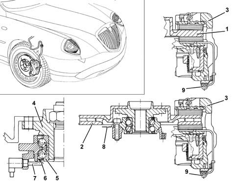

Specifications
- Path
- Descriptions > 33 BRAKES > 3310 DISC BRAKES > 3310A FRONT DISC BRAKES > Specifications
- Kind
- system description
- Applies to
- all engines; all production periods
- Interactive page
- https://sloeber94.github.io/elrnDB-lThss/en/#/152049
Applies to: all engines; all production periods
The vehicle is equipped with self-ventilated discs and floating type cast iron calipers with automatic recovery of the clearance.
A multi-polar magnetic ring is fitted on the hub bearing inner race that signals the movement of the wheel to the ABS active sensor.(See subassembly ) 3340 ANTI-LOCK BRAKING SYSTEM (A.B.S.)

- 1 - Brake disc
- 2 - Brake caliper
- 3 - Hub
- 4 - Hub
- 5 - Bearing
- 6 - Magnetic ring
- 7 - ABS active sensor
- 8 - Shield